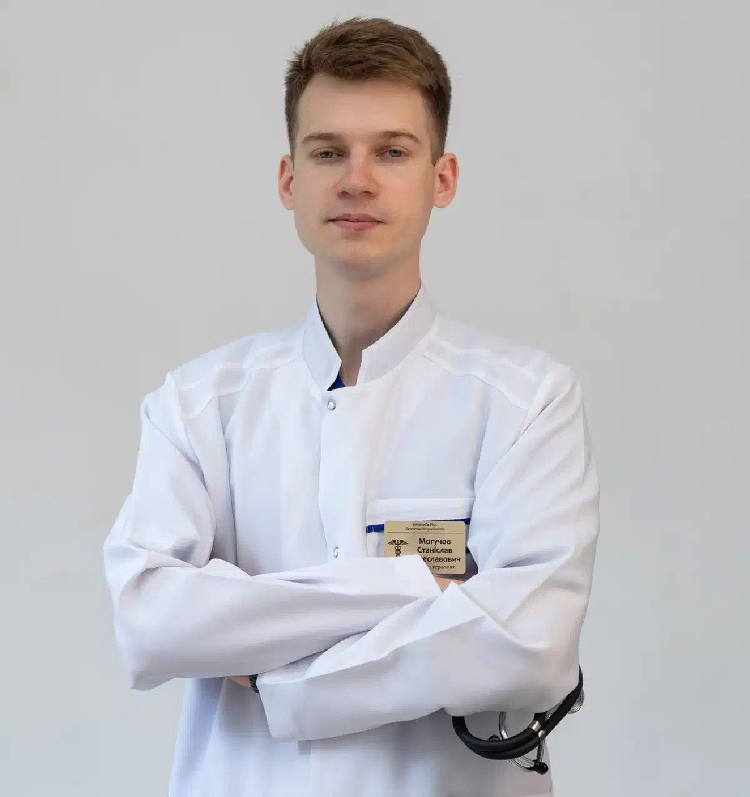

+38(068) 79 72 782
+38(068) 79 72 782Лікування алкоголізму у Шевченківському районі Харкова
Анонімна наркологічна допомога вдома та в стаціонарі


Безкоштовна консультація, працюємо цілодобово 24/7
Анонімна наркологічна допомога вдома та в стаціонарі

Дата написання: 13 жовт. 2026 р.
Останнє оновлення: 21 жовт. 2026 р.
Алкогольна залежність — хронічне захворювання, при якому людина поступово втрачає контроль над кількістю вживаного спиртного, відчуває сильне бажання випити та продовжує вживати алкоголь попри негативні наслідки для здоров’я, сім’ї та повсякденного життя. Лікування алкоголізму в Харкові спрямоване не лише на усунення наслідків уживання спиртного, а й на зниження ймовірності повторних запоїв. Медична допомога може включати консультацію нарколога, діагностику, медикаментозну терапію, психотерапію та реабілітацію. У Шевченківському районі пацієнтам зручно організовувати консультації та, за наявності медичних показань, домашні візити фахівців. Водночас повноцінне лікування алкогольної залежності зазвичай потребує послідовного підходу та подальшого спостереження.
Звертатися до нарколога рекомендується при появі перших ознак втрати контролю над уживанням спиртного. Приводом для консультації можуть стати регулярне вживання алкоголю, збільшення звичних доз, неможливість самостійно відмовитися від випивки, повторні запої та погіршення самопочуття після припинення вживання. Особливої уваги потребують ранковий тремор, пітливість, тривожність, тахікардія та бажання випити для полегшення неприємних симптомів. Такі прояви можуть вказувати на розвиток фізичної залежності. Консультація нарколога в Харкові дозволяє визначити вираженість проблеми та підібрати лікування до виникнення тяжких ускладнень. Не слід відкладати звернення до моменту, коли залежність призведе до серйозних захворювань печінки, серця або нервової системи. Чим раніше людина отримує професійну допомогу, тим більше можливостей для відновлення здоров’я та зміни звичного способу життя.
Хронічна алкогольна залежність розвивається поступово та може тривалий час залишатися непомітною для оточення. Однією з основних ознак стає нездатність контролювати вживання спиртного. Людина планує випити невелику кількість алкоголю, але продовжує вживання значно довше передбачуваного часу. Поступово збільшується толерантність, з’являються повторні запої, погіршується сон, знижується працездатність і виникають конфлікти з близькими. При фізичній залежності після припинення вживання можуть розвиватися тремор рук, пітливість, тривога, нудота, безсоння та прискорене серцебиття. У тяжких випадках виникають судоми та алкогольний делірій. Анонімне лікування алкогольної залежності може допомогти пацієнту звернутися по медичну підтримку, не відкладаючи вирішення проблеми через страх розголосу.
Формування алкогольної залежності пов’язане з поєднанням біологічних, психологічних і соціальних чинників. На розвиток захворювання можуть впливати спадкова схильність, особливості роботи нервової системи, хронічний стрес, депресивні стани, тривожні розлади та звичка використовувати алкоголь як спосіб емоційного розслаблення. У деяких людей регулярне вживання починається на тлі сімейних конфліктів, професійної перевтоми або тяжких життєвих обставин. З часом спиртне перестає приносити очікуване полегшення, а відмова від нього починає супроводжуватися фізичним і психологічним дискомфортом. Лікування алкогольної залежності в Шевченківському районі Харкова повинно враховувати не лише кількість уживаного алкоголю, а й причини, що підтримують залежну поведінку.
У традиційних описах алкоголізму виділяють кілька стадій, що відображають поступове посилення залежності. На ранньому етапі виникають виражене бажання вживати алкоголь, зниження контролю над кількістю випитого та збільшення частоти вживання. У міру прогресування захворювання може формуватися фізична залежність, що супроводжується алкогольною абстиненцією після припинення вживання. На пізніших етапах підвищується ймовірність тривалих запоїв, порушень пам’яті, когнітивних змін та ураження внутрішніх органів. Однак сучасна діагностика переважно оцінює не умовну стадію, а конкретні діагностичні ознаки та тяжкість розладу. Лікування хронічного алкоголізму підбирається з урахуванням вираженості залежності, супутніх захворювань і ризику ускладнень.
Тривале вживання спиртних напоїв негативно впливає практично на всі системи організму. Алкоголь підвищує ймовірність захворювань печінки, включно зі стеатозом, алкогольним гепатитом і цирозом, може сприяти розвитку артеріальної гіпертензії, аритмій, кардіоміопатії та панкреатиту. З боку нервової системи можливі порушення пам’яті, уваги, сну, периферична нейропатія та когнітивні розлади. Регулярне вживання також збільшує ризик деяких онкологічних захворювань. Окрему небезпеку становить алкогольна абстиненція, яка при тяжкому перебігу супроводжується судомами, галюцинаціями та порушеннями свідомості. Детоксикація від алкоголю в Харкові може бути частиною медичної допомоги при гострих порушеннях, але не усуває всіх наслідків хронічного вживання.
Первинна консультація нарколога необхідна для визначення ступеня алкогольної залежності та вибору безпечної тактики лікування. Під час бесіди лікар уточнює тривалість уживання спиртного, частоту запоїв, кількість алкоголю, час останнього приймання, наявність попередніх епізодів абстиненції та супутніх захворювань. Окрему увагу приділяють лікам, які приймає пацієнт, психоемоційному стану та мотивації. За необхідності призначаються лабораторні дослідження, ЕКГ і консультації інших фахівців. Консультація нарколога в Харкові може стати першим етапом амбулаторної допомоги або підготовки до стаціонарного лікування. За результатами обстеження лікар пояснює можливі методи терапії, очікувані результати, протипоказання та необхідність подальшого спостереження.
Виклик нарколога додому в Харкові може бути зручним варіантом первинного медичного огляду для пацієнтів, яким складно самостійно відвідати клініку. Домашній візит дозволяє оцінити загальний стан, виміряти артеріальний тиск, пульс, сатурацію кисню, визначити вираженість симптомів і необхідність подальшого обстеження. За наявності показань лікар може призначити лікування в амбулаторних умовах. Виїзна допомога може бути актуальною для жителів Павлового Поля, Олексіївки, району станції метро «Наукова», проспекту Науки та прилеглих вулиць. Однак можливість надання допомоги вдома залежить насамперед від стану пацієнта, а не від територіального розташування. При судомах, галюцинаціях, вираженій сплутаності свідомості, порушенні дихання або інших небезпечних симптомах необхідно негайно викликати екстрену медичну допомогу за номером 103.
Для багатьох пацієнтів конфіденційність є важливою умовою звернення по наркологічну допомогу. Люди можуть хвилюватися через можливе розголошення діагнозу, ставлення оточення або наслідки для професійної діяльності. Анонімне лікування алкоголізму в Харкові передбачає дотримання лікарської таємниці, захист персональних даних і шанобливе ставлення до пацієнта. Умови оформлення документації та особливості обліку залежать від чинного законодавства, типу медичного закладу та характеру допомоги, що надається. Тому можливість обслуговування без певних форм реєстрації необхідно попередньо уточнювати в обраного надавача медичних послуг. Конфіденційний формат не виключає медичного обстеження, оформлення необхідної документації та виконання вимог безпеки. Основне завдання лікаря — забезпечити пацієнту кваліфіковану допомогу та створити умови для подальшого лікування алкогольної залежності.
Перед призначенням терапії нарколог проводить комплексну оцінку стану пацієнта. Лікар уточнює основні скарги, тривалість уживання алкоголю, відомості про хронічні захворювання, попередні запої та перенесені ускладнення. Під час об’єктивного огляду вимірюються артеріальний тиск, частота серцевих скорочень, температура тіла, сатурація кисню та частота дихання. Оцінюються свідомість, орієнтація, вираженість тремору, ознаки зневоднення та неврологічні симптоми. За необхідності проводяться ЕКГ, аналізи крові, визначення рівня глюкози та електролітів. Первинний огляд нарколога вдома допомагає визначити, чи допустиме амбулаторне лікування, чи потрібна госпіталізація. Особливої уваги потребують пацієнти із захворюваннями серця, печінки, нирок, цукровим діабетом і раніше перенесеними судомними нападами. На підставі обстеження складається індивідуальний план лікування.
Виведення із запою вдома в Шевченківському районі Харкова може розглядатися при неускладненій алкогольній абстиненції, стабільних показниках життєво важливих функцій і наявності умов для медичного спостереження. Запій часто супроводжується порушенням сну, зниженням апетиту, тривожністю, тремором, підвищенням тиску та прискореним серцебиттям. Після припинення вживання спиртного ці симптоми можуть посилюватися, тому самостійне лікування не завжди безпечне. Під час огляду лікар оцінює тяжкість синдрому відміни, ризик судом, делірію та інших ускладнень. Залежно від результатів призначаються медикаментозне лікування, корекція зневоднення та додаткові заходи. Виведення із запою вдома Харків не слід розглядати як гарантовано безпечну процедуру для кожного пацієнта. При виражених симптомах, тривалому вживанні та наявності чинників ризику кращим варіантом стає стаціонарна медична допомога.
Крапельниця від алкоголю вдома являє собою внутрішньовенне введення розчинів і, за необхідності, лікарських препаратів за медичними показаннями. Інфузійна терапія може застосовуватися при зневодненні, порушеннях водно-електролітного балансу та неможливості поповнити необхідний об’єм рідини звичайним питтям. Склад розчину, швидкість введення та загальний об’єм визначаються лікарем після оцінки стану пацієнта. За наявності серцевої або ниркової недостатності надмірне введення рідини може бути небезпечним. Під час процедури контролюються тиск, пульс, дихання та загальне самопочуття. Важливо розуміти, що крапельниця не є універсальним способом лікування алкоголізму та самостійно не запобігає алкогольним судомам або делірію.
Детоксикація від алкоголю — комплекс медичних заходів, спрямованих на стабілізацію стану людини після вживання спиртного та лікування гострих порушень, що виникають. Необхідний обсяг допомоги залежить від того, які прояви переважають: інтоксикація, зневоднення, алкогольна абстиненція чи супутнє захворювання. Лікар оцінює стан серцево-судинної системи, дихання, рівень свідомості, ознаки дефіциту вітамінів та електролітних розладів. За показаннями призначаються розчини для корекції зневоднення, тіамін та інші препарати. Крапельниця від алкоголю вдома в Харкові можлива не в усіх випадках: при тяжкій абстиненції, судомах, галюцинаціях і виражених порушеннях свідомості потрібен стаціонар.
Зняття алкогольної інтоксикації вдома починається з оцінки стану пацієнта та виключення небезпечного отруєння. Лікар уточнює кількість ужитого спиртного, час останнього приймання, наявність блювання, порушень свідомості та можливого поєднання алкоголю з лікарськими препаратами або наркотичними речовинами. При легких проявах допомога може включати спостереження, рекомендації щодо поповнення рідини та симптоматичні заходи. Інфузійна терапія призначається лише за медичними показаннями. Особливу небезпеку становлять виражена сонливість, втрата свідомості, уповільнене дихання, судоми та повторне блювання з порушенням здатності захищати дихальні шляхи. У подібних ситуаціях швидка допомога при алкогольному отруєнні повинна бути викликана негайно. Спроби самостійно вводити препарати, викликати блювання або залишати людину без спостереження можуть призвести до серйозних ускладнень.
Запій тривалістю 5–10 днів може супроводжуватися вираженим виснаженням, порушеннями сну, зневодненням, втратою апетиту, тривожністю та тахікардією. Однак тяжкість стану залежить не лише від кількості днів уживання, а й від індивідуальних особливостей пацієнта, кількості алкоголю та попередніх епізодів абстиненції. Після різкого припинення вживання спиртного в людини з фізичною залежністю існує ризик судом та алкогольного делірію. Лікування тривалого запою в Харкові починається з обстеження та оцінки необхідності госпіталізації. При тяжкій симптоматиці потрібні медичне спостереження, відповідна медикаментозна терапія та корекція супутніх порушень. Домашня крапельниця не може замінити стаціонар при високому ризику ускладнень. Особливо обережний підхід необхідний пацієнтам похилого віку, людям із серцево-судинними захворюваннями та тим, хто раніше переніс алкогольний делірій.
Виведення із запою за три дні в Харкові може розглядатися як умовний формат короткострокової медичної допомоги при неускладнених станах. У перший день проводяться огляд пацієнта, оцінка тяжкості абстиненції та призначення необхідного лікування. Основне завдання — стабілізувати стан, визначити ризик ускладнень і розпочати відповідну медикаментозну терапію. На другий день оцінюється динаміка тремору, тривожності, показників кровообігу, сну та інших симптомів. За необхідності лікар коригує призначення та вирішує питання про додаткове обстеження. На третій день оцінюється результат лікування та формується план подальшого спостереження. Водночас алкогольна абстиненція може тривати довше трьох днів, а окремі ускладнення розвиваються не одразу. Тому поетапне виведення із запою не повинно обмежуватися фіксованим терміном, якщо стан пацієнта потребує продовження терапії або госпіталізації.
Медикаментозне лікування залежить від того, яке завдання необхідно вирішити: усунути алкогольну абстиненцію, супутні порушення або знизити ризик повторного вживання спиртного. При клінічно значущому синдромі відміни препаратами першої лінії зазвичай є бензодіазепіни, які застосовуються під медичним спостереженням для зниження ризику судом і делірію. За показаннями призначається тіамін для профілактики неврологічних ускладнень, проводиться корекція зневоднення та електролітних порушень. Для тривалого лікування алкогольної залежності можуть застосовуватися налтрексон, акампросат і дисульфірам з урахуванням показань, протипоказань і доступності препаратів. Медикаментозне лікування алкоголізму в Харкові потребує індивідуального підбору схеми. Самостійне застосування седативних засобів, особливо при продовженні вживання алкоголю, може призвести до пригнічення дихання та інших небезпечних наслідків.
Медикаментозна терапія алкогольної залежності може включати кілька послідовних напрямів. На початковому етапі за необхідності проводиться лікування синдрому відміни та стабілізація фізичного стану. Після цього лікар оцінює можливість призначення препаратів, спрямованих на зменшення потягу до спиртного або підтримання утримання від алкоголю. Вибір залежить від тяжкості залежності, стану печінки та нирок, наявності інших захворювань і ліків, які приймає пацієнт. Медикаментозне лікування алкогольної залежності найефективніше розглядати як частину комплексної програми, що включає психотерапію та регулярне спостереження. Пацієнтам важливо заздалегідь обговорити з наркологом очікуваний результат, можливі побічні реакції, тривалість лікування та необхідність контрольних консультацій. Жоден препарат не гарантує довічної відмови від алкоголю, тому велике значення мають мотивація пацієнта та подальша підтримка.
Кодування від алкоголізму дисульфірамом ґрунтується на здатності препарату блокувати один з етапів метаболізму етилового спирту. При вживанні алкоголю на тлі дії дисульфіраму може виникати неприємна та потенційно небезпечна реакція, що супроводжується почервонінням шкіри, нудотою, блюванням, серцебиттям, зниженням артеріального тиску та іншими симптомами. Тому перед призначенням препарату потрібні медичне обстеження, оцінка протипоказань і детальне інформування пацієнта. Дисульфірам безпосередньо не усуває психологічні причини залежності та підходить не кожній людині. Його застосування можливе лише за добровільної згоди та готовності дотримуватися режиму утримання від алкоголю. Особлива обережність необхідна при серцево-судинних захворюваннях, порушеннях функції печінки та деяких психічних розладах.
Підшивка від алкоголізму в Харкові — поширена назва методу, при якому передбачається введення або імплантація препарату з метою підтримання утримання від спиртного. Перед проведенням такої процедури необхідно уточнити діючу речовину, зареєстровану лікарську форму, спосіб введення, тривалість дії та докази ефективності. Не всі методи, які пропонуються під назвою «підшивка», мають однакову доказову базу, а наявність імплантата сама по собі не гарантує відсутності рецидивів. Якщо використовується дисульфірам, необхідно враховувати ймовірність тяжкої реакції при вживанні алкоголю та наявні протипоказання. Процедура не повинна проводитися без добровільної інформованої згоди пацієнта. Кодування від алкогольної залежності в Харкові доцільно поєднувати з психотерапевтичною підтримкою, оскільки медикаментозні методи не замінюють роботу з причинами залежної поведінки.
Психологічна підтримка є важливою частиною комплексного лікування алкоголізму. Пацієнти можуть відчувати сильний потяг до спиртного, тривожність, дратівливість, почуття провини, зниження самооцінки та труднощі у стосунках із родичами. Допомога психолога при алкогольній залежності в Харкові спрямована на виявлення чинників, що провокують уживання, розвиток навичок емоційної саморегуляції та формування стійкої мотивації до змін. У роботі можуть використовуватися мотиваційне консультування, когнітивно-поведінкова терапія, індивідуальні та сімейні консультації. Особливу увагу приділяють запобіганню повторним запоям і формуванню плану дій при появі потягу до алкоголю. Психологічна допомога не замінює медичного лікування при тяжкій абстиненції, але може значно доповнювати його на етапі відновлення. За наявності депресії, вираженої тривоги або інших психічних розладів може знадобитися участь психіатра.
У чоловіків алкогольна залежність може супроводжуватися повторними запоями, зниженням працездатності, конфліктами в сім’ї, порушеннями сну та поступовим погіршенням загального здоров’я. Деякі пацієнти тривалий час не звертаються по допомогу, вважаючи регулярне вживання спиртного способом впоратися зі стресом або перевтомою. У міру прогресування залежності можуть виникати порушення роботи печінки, серцево-судинної та нервової систем. Лікування алкоголізму в чоловіків у Харкові починається з оцінки вираженості залежності, супутніх захворювань і готовності пацієнта до терапії. За необхідності проводиться лікування алкогольної абстиненції, після чого розглядаються медикаментозні та психотерапевтичні методи.
Алкогольна залежність у жінок потребує такого самого професійного медичного підходу, як і в чоловіків, однак під час вибору терапії необхідно враховувати особливості стану здоров’я, супутні захворювання та соціальні обставини. Тривале вживання спиртного може супроводжуватися порушеннями сну, тривожністю, депресивними симптомами, захворюваннями печінки та іншими ускладненнями. У деяких пацієнток звернення по допомогу відкладається через страх суспільного осуду або необхідність приховувати проблему від оточення. Анонімне лікування жіночого алкоголізму в Харкові передбачає конфіденційне консультування, діагностику та індивідуальний підбір програми відновлення. Лікування може включати медикаментозну терапію, психотерапію та підтримку родичів за згодою пацієнтки. Окрему увагу приділяють репродуктивному здоров’ю, вагітності та можливій взаємодії лікарських препаратів. При тяжкій абстиненції необхідна госпіталізація незалежно від статі пацієнта.
Алкогольна залежність нерідко поєднується з артеріальною гіпертензією, порушеннями серцевого ритму, ішемічною хворобою серця та іншими серцево-судинними захворюваннями. На тлі запою або припинення вживання спиртного можуть з’являтися тахікардія, коливання тиску, запаморочення, слабкість і задишка. Подібні симптоми потребують ретельної оцінки, оскільки не завжди пов’язані виключно з алкогольною абстиненцією. Перед призначенням терапії лікар уточнює препарати, які приймає пацієнт, проводить вимірювання життєво важливих показників і за необхідності рекомендує ЕКГ або додаткове обстеження. Виведення із запою при підвищеному тиску повинно проводитися з урахуванням ризику серцево-судинних ускладнень. Надмірне інфузійне навантаження та неправильно підібрані препарати можуть погіршити стан пацієнта. При болю в грудях, вираженій задишці, порушеннях свідомості або підозрі на інсульт необхідна екстрена медична допомога.
Домашня наркологічна допомога підходить не кожному пацієнту. Госпіталізація необхідна або наполегливо рекомендується при тяжкій алкогольній абстиненції, судомних нападах, галюцинаціях, вираженій сплутаності свідомості, нестабільних показниках кровообігу та порушеннях дихання. Додатковими чинниками ризику є раніше перенесений алкогольний делірій, тяжкі захворювання серця, печінки та нирок, виражені електролітні порушення, вагітність і відсутність безпечних умов спостереження. Лікування алкогольної абстиненції в стаціонарі дозволяє проводити регулярний контроль стану та своєчасно коригувати терапію. Тривалий запій сам по собі не завжди визначає необхідність госпіталізації, але потребує особливо уважної оцінки ризику ускладнень.
Наркологічний стаціонар у Харкові забезпечує можливість медичного спостереження за пацієнтами, яким недостатньо амбулаторної допомоги. Госпіталізація може знадобитися при тяжкій алкогольній абстиненції, повторних судомах, ризику делірію, вираженому зневодненні та серйозних супутніх захворюваннях. В умовах стаціонару лікар оцінює життєво важливі показники, проводить необхідні дослідження та призначає медикаментозну терапію. За наявності показань здійснюється корекція електролітних порушень, дефіциту вітамінів та інших ускладнень. Після стабілізації стану пацієнту може бути запропонована подальша програма лікування алкогольної залежності.
Після завершення лікування гострої алкогольної абстиненції пацієнту важливо продовжити відновлення фізичного та психологічного здоров’я. Тривале вживання спиртного може супроводжуватися порушеннями харчування, дефіцитом вітамінів, безсонням, тривожністю та змінами емоційного стану. Реабілітація після алкогольної залежності спрямована на формування стійких навичок тверезого життя, запобігання рецидивам і відновлення соціальних зв’язків. Програма може включати індивідуальну психотерапію, групову підтримку, сімейне консультування, лікування супутніх захворювань і регулярні консультації нарколога. За необхідності призначаються препарати для зниження ризику повторного вживання алкоголю. Тривалість реабілітації залежить від тяжкості залежності, попередніх спроб лікування та індивідуальних потреб пацієнта. Комплексне відновлення дозволяє працювати не лише з наслідками запою, а й із чинниками, що підтримують захворювання.
Вартість лікування алкоголізму в Шевченківському районі Харкова починається від 2199 грн.
| Популярні послуги | Ціна |
|---|---|
| Нарколог Харків | Від 1500 грн |
| Крапельниця від алкоголю | Від 2199 грн |
| Виведення із запою вдома | Від 2199 грн |
| Кодування від алкоголізму | Від 6000 грн |
Для організації виклику нарколога додому в Шевченківському районі Харкова необхідно зв’язатися з медичною службою та повідомити основні відомості про стан пацієнта. Бажано вказати вік, тривалість уживання алкоголю, час останнього приймання спиртного, основні симптоми, наявність хронічних захворювань і раніше перенесених ускладнень. Додатково слід повідомити про ліки, які приймає пацієнт, епізоди судом, галюцинацій або виражені порушення свідомості. Після попередньої оцінки визначається можливість домашнього огляду та необхідність екстреної госпіталізації. Виїзна наркологічна допомога може бути актуальною для жителів Павлового Поля, Олексіївки, району проспекту Науки та інших частин Шевченківського району за наявності відповідного обслуговування за адресою. Анонімна наркологічна допомога вдома в Харкові дозволяє розпочати обстеження та обговорення лікування у звичній для пацієнта обстановці. При тяжкій абстиненції, порушенні дихання, судомах або сплутаності свідомості необхідно негайно викликати швидку допомогу за номером 103. Телефон для консультації та виклику нарколога додому в Харкові: +38(050-021-69-57)

Статтю перевірено експертом
Робулець Ольга
Лікар-нарколог, ординатор
Можливо цікава стаття:
Що робити родичам, якщо близька людина в запої

Починати лікування варто вже тоді, коли вживання алкоголю стає регулярним, людині складно контролювати кількість випитого, з’являються запої, абстинентний синдром, проблеми зі здоров’ям, роботою або стосунками з близькими. Чим раніше людина звертається по допомогу, тим менший ризик тяжких ускладнень і прогресування залежності.
Алкогольна залежність належить до хронічних розладів, однак за умови правильно підібраного лікування можна досягти тривалої стійкої ремісії та повністю відмовитися від вживання алкоголю. Результат залежить від мотивації пацієнта, тяжкості залежності, тривалості вживання алкоголю та дотримання рекомендацій лікаря.
Лікування починається з консультації та оцінки стану пацієнта. Лікар уточнює тривалість і характер вживання алкоголю, наявність запоїв, симптоми абстиненції, хронічні захворювання та попередні спроби лікування. Якщо пацієнт перебуває у запої або має виражений синдром відміни, першим етапом може бути детоксикація та стабілізація стану.
Окремі етапи лікування алкогольної залежності можуть проводитися вдома. Це може бути виведення із запою, детоксикація, лікування легкого або помірного абстинентного синдрому, консультація лікаря та подальший медикаментозний супровід.
Стаціонар може знадобитися при тяжкому абстинентному синдромі, тривалому запої, судомах, галюцинаціях, сплутаності свідомості, підозрі на алкогольний делірій, виражених порушеннях артеріального тиску або серцевого ритму, а також при тяжких супутніх захворюваннях. У стаціонарі стан пацієнта можна контролювати цілодобово.
Якщо пацієнт перебуває у запої, першим етапом зазвичай є безпечне припинення вживання алкоголю та лікування абстинентного синдрому. Після стабілізації фізичного стану можна переходити до подальшого лікування залежності, протирецидивної терапії, психотерапії та інших методів.
Лікування може включати медикаментозну терапію, детоксикацію, протирецидивне лікування, психотерапію, роботу з мотивацією, кодування та реабілітаційні програми. Зазвичай найбільшу ефективність дає комплексний підхід, коли лікар підбирає методи з урахуванням стану та індивідуальних особливостей конкретного пацієнта.
Кодування може використовуватися як один з етапів лікування алкогольної залежності. Його завдання — допомогти людині зберігати тверезість і знизити ризик вживання алкоголю протягом певного періоду. Водночас кодування не усуває всі психологічні та поведінкові причини залежності, тому часто поєднується з консультаціями фахівця, психотерапією та іншими методами лікування.
Планове лікування алкогольної залежності зазвичай проводиться за поінформованою згодою самого пацієнта. Якщо людина не хоче лікуватися, родичі можуть звернутися за консультацією та обговорити зі спеціалістом способи мотивації до лікування. У станах, що становлять безпосередню загрозу життю або здоров’ю, необхідна екстрена медична допомога.
Тиск, погрози та постійні конфлікти часто лише посилюють опір. Родичам краще спокійно обговорювати конкретні наслідки вживання алкоголю та пропонувати консультацію спеціаліста. Може використовуватися мотиваційна бесіда, мета якої — допомогти людині усвідомити проблему та самостійно прийняти рішення про початок лікування.
Після стабілізації стану важливо продовжувати лікування та не обмежуватися лише детоксикацією або виведенням із запою. Знизити ризик зриву допомагають регулярні консультації спеціаліста, психотерапія, протирецидивне лікування, уникнення ситуацій, пов’язаних із вживанням алкоголю, підтримка близьких та зміна звичного способу життя.
Реабілітація потрібна не кожному пацієнту в однаковому обсязі, однак при сформованій залежності, повторних запоях і частих зривах вона може суттєво доповнювати основне лікування. Реабілітаційна програма допомагає працювати з психологічними причинами вживання алкоголю, формувати нові звички та навички тверезого життя, а також знижувати ризик повернення до алкоголю.
Анонимно

Ну в хлопців просто золоті руки й світла голова, мене капали Олексій та Владислав, буквально за декілька сеансів я наче заново народився, до цього пив більше 3х тижнів, не міг зупинитись, дуже радий що знайшов саме цих спеціалістів, всім рекомендую
Анонимно
В течение нескольких лет я злоупотреблял алкоголь, что привело к увольнению с работы и вызвало у меня мысли о суициде. Понимая, что такой образ жизни неприемлем, я обратился за помощью в клинику “Амбрела”. Здесь я смог преодолеть свою зависимость от спиртного благодаря заботливым и опытным врачам, а также эффективной системе лечения. Спустя более года я полностью избавился от желания употреблять алкоголь, и теперь моя жизнь вернулась в норму. Я даже не приближаюсь к спиртному! Благодарю врачей клиники “Амбрела” за их помощь и заботу.
Анонимно
Я обращался за помощью в различные клиники, пытаясь избавиться от своей зависимости от алкоголя, но без особых успехов. Никак не мог справиться с желанием прибегнуть к бутылке, пока друг не посоветовал мне обратиться в центр “Амбрелла”. Я записался на прием и был поражен заботливым отношением к пациентам. Уже прошло два года, и теперь я смотрю на алкоголь с абсолютной равнодушием, активно занимаюсь спортом и улучшил отношения в семье. Благодаря центру “Амбрелла” моя жизнь была спасена от алкогольной зависимости!
Анонимно
Хочу выразить свою благодарность врачам из центра алкоголизма “Амбрела” за то, что они буквально спасли мою жизнь. В течение последнего года я сильно увлекался питьем, и все это привело к катастрофическим последствиям. Хотя я ходил на терапевтические сеансы, но безрезультатно. Тогда я нашел адрес клиники “Амбрела” в интернете, изучил отзывы и информацию о центре, и записался на прием. Там мне сразу предложили методику лечения, которая помогла не только справиться с физической ломкой, но и психической зависимостью от алкоголя. Не буду распространяться, скажу только одно - после пребывания в этой клинике я стал другим человеком, и навсегда забыл, что такое привкус алкоголя. Больше меня не тянет на это! Я искренне верю, что в центре “Амбрела” трудятся настоящие целители душ!
Анонимно
После сложного развода мой сын начал подавлять свою обиду и горе употреблением алкоголя. Он старался скрывать это от меня, но я, как мать, почувствовала, что что-то не так. В конечном итоге, ситуация стала критической. Моя знакомая посоветовала мне обратиться в клинику “Амбрела”. Я была приятно удивлена их работой! Они помогли сыну преодолеть очередной период злоупотребления алкоголем, и с тех пор прошел уже более года, и он совсем не пьет.
Анонимно
Благодаря вашей помощи, моя семья была спасена. Я с трудом уговорила мужа начать лечение, и последний каплей был пьяное ДТП. К счастью, в аварии никто не пострадал, но это был для него сигнал к действию. Он наконец согласился пройти курс лечения на дому, в стационар не хотел ложиться. Лечение было трудным, и были моменты, когда срыв был настолько близок, но благодаря вашему центру Амбрелла мы справились с этим.
Анонимно
Для меня эта клиника стала настоящим спасением! Долгое время я упорно отказывался от лечения, уверен был, что со мной все в порядке. Но к счастью, семья уговорила меня попробовать. И сегодня я чувствую себя невероятно счастливым, осознавая, что мне абсолютно не нужен алкоголь. Огромное спасибо за помощь и поддержку, которые я получил здесь! Я благодарен вам за новую возможность жить полноценной и счастливой жизнью!
Анонимно
Выражаю благодарность ребятам, которые оказали мне помощь и не отвернулись. Уже 10 месяцев я остаюсь чистой. Благодарю за то, что помогли найти новый путь в моей жизни.
Номер телефону:
+380 (68) 797 27 82
+380 (50) 021 69 57
Адресу наркологічного центра вашого міста уточнюйте за
телефоном
Працюємо: Київ, Одеса, Львів, Харків, Дніпро, Запоріжжя,
Черкасах, Чугуєві, Чорноморську, Кам'янському
Telegram: t.me/umbrellaplus
Графік работы: Цілодобово